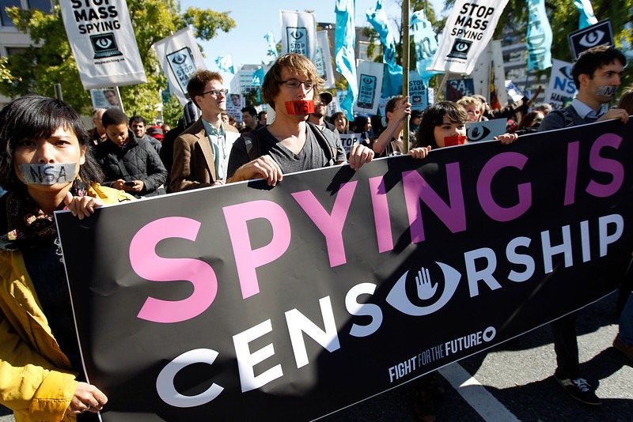
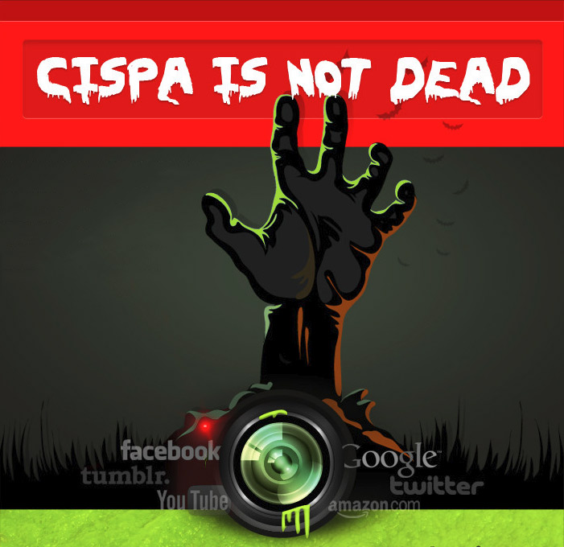

Surveillance impacts every aspect of our lives.
Ad agencies create profiles about us without our knowledge. Companies
violate their own privacy agreements and still are granted immunity after
sharing our customer data with the NSA. The government and police use
counterterrorism resources to spy on our peaceful political protests.
And just imagine what else is happening without our knowledge.
Learn More
Call Congress — don't let them pass mass surveillance laws in your name!
How did your lawmakers vote on surveillance?
Surveillance is censorship.
Supporters of mass surveillance often say "those who have nothing to hide have nothing to fear." This trivial argument ignores the fact that privacy is a human right, and that surveillance is often used politically to bully journalists and silent dissent. A report by the U.N. found that when people know they're under surveillance, they are more likely to limit their own freedom of expression, engaging in self-censorship for fear of government retaliation. In the United States, surveillance programs meant to fight terrorism are used to monitor and target political activists, directly threatening our rights to free speech and free association. Governments want their citizens to be afraid of them. Surveillance is not about protecting us, it's about control.
Surveillance legislation in the United States
The United States government already has sweeping mass surveillance authority, and Congress is trying to pass even more. Here's a summary of the main authorities the government uses to engage in mass surveillance.
• The USA Freedom Act
Congress recently passed the USA Freedom Act, a so-called surveillance reform bill that was initially hyped as an end to NSA bulk collection. But in fact, this bill extended key portions of the PATRIOT Act and explicitly authorized the NSA's phone metadata spying program, which was ruled illegal up until the bill passed. The USA Freedom Act was backed by the US Intelligence Community, and Congress passed it without support from key privacy groups, such as Fight for the Future, Electronic Frontier Foundation and American Civil Liberties Union.
Opponents of the USA Freedom Act argued that the NSA will still be able to use broad search terms to target large portions of the population, and they can collect even more information from contacts “connected” to those targets. Companies that hand customer data over to the government are rewarded with blanket immunity from lawsuits, even when they violate their own privacy agreements with customers. The bill also allows the government to issue permanent gag orders on people or companies that receive surveillance orders.
The USA Freedom Act was just recently passed. Time will tell if it reigns-in mass surveillance at all, but already the law is being used to potentially shut down surveillance transparency lawsuits.
• Section 702 of the Foreign Intelligence Surveillance Act (FISA)
Although much of the public debate over mass surveillance has centered around the phone "metadata" collection program that Edward Snowden revealed, lawmakers including Senator Ron Wyden of the Intelligence Committee have suggested that this was just the tip of the iceberg. Under Section 702 of FISA, the NSA has been able to collect huge quantities of electronic communications data, including the actual content of emails and web browsing sessions, without a warrant or any meaningful oversight. Section 702 has allowed the NSA to tap directly into the Internet backbone, giving them potentially unlimited surveillance ability.
AT&T's Folsom Street backbone facility, where the NSA tapped directly into the Internet.
• Executive Order 12333
Issued by President Ronald Reagan in 1980, Executive Order 12333 has been used by the NSA to justify tapping directly into the cloud storage servers of Yahoo and Google without a warrant or civilian oversight. The NSA has also used EO 12333 to secretly construct social networks of American citizens. Unlike other legislation, executive orders are issued by the president without any oversight or approval from Congress. This raises serious privacy and separation of power questions when such authority is used to engage in mass surveillance of American citizens.
• CIS(P)A: The Cyber-Intelligence Sharing Act — not passed yet!
CISA, formerly called CISPA, is a surveillance bill that would let the government collect private user information stored by web companies like Facebook and Dropbox, and share it with the NSA, DEA, and FBI. Companies would given legal immunity for working with the government surveillance authorities in ways that violate privacy laws. Thanks to outcry from privacy activists, Congress has tried and failed to pass CISA four times over the last few years, but they're trying again this summer. Like a zombie, this bill is hard to kill once and for all.
How to get involved:
Congress recently passed the USA Freedom Act, but this legislation didn't go nearly far enough to reign-in the NSA. Call Congress and demand real surveillance reform!